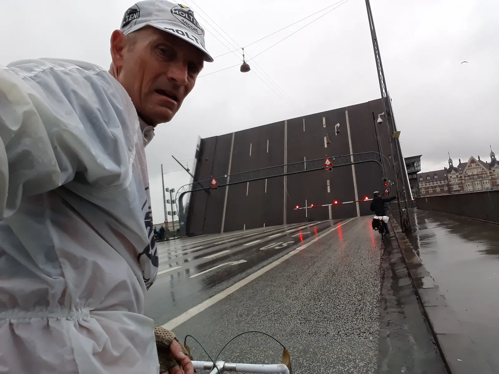
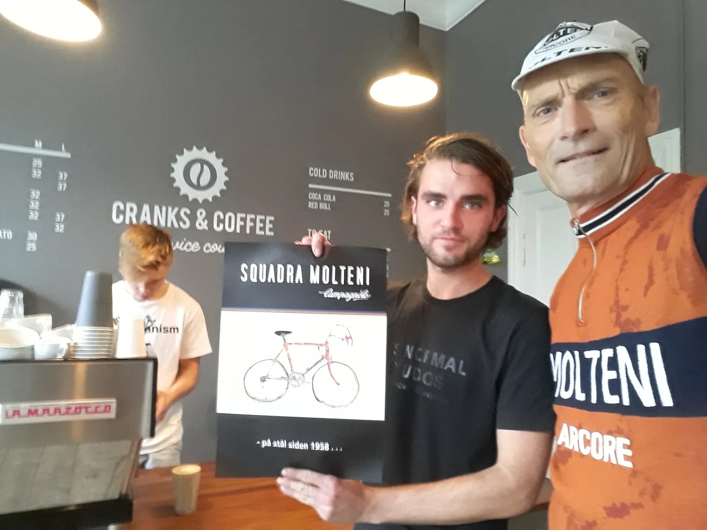
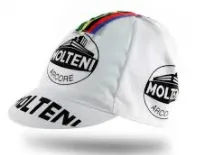
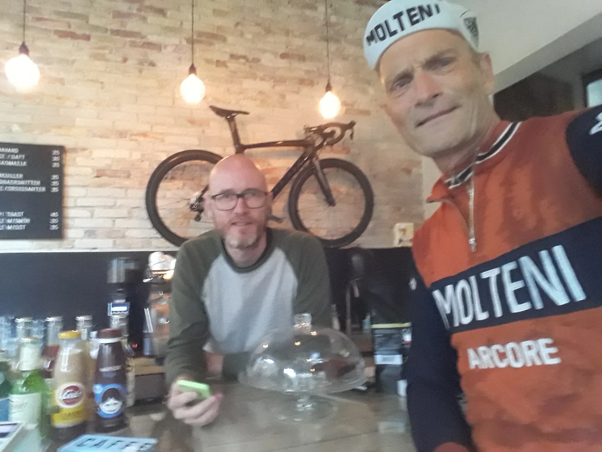

Giro de Copenhagen della Espresso

Kaptajn Bjørnsteen kørte lørdag 9. september Giro de Copenhagen della Espresso; en regnvåd rundtur til nogle københavnske cykelcafeer. Men den københavnske trafik vist sig, at drille kaptajnens mission.
– Jeg var i hovedstaden denne semsommer-regnvåde lørdag – og besluttede mig for, at jeg lige ville tjekke de dersens nymodens cykelcafeer ud. Det skulle jo være det nye sort, fortæller Bjørnsteen.
– Og var der mon nogle af stederne, som havde kulsort belgisk øl på spisekortet…
Bjørnsteen havde noteret fire cykelcafeer på sit kort. Én nord på, to i byen og én på Islandsbrygge. Trafikken og forhindringerne gjorde sit til, at det blev kun blev til to besøg inden lukketid.
– Jamen, der er jo en jungle derinde: Lyskryds hele tiden – og over alt. Broer der går op og ned. Biler der svinger før de blinker, fodgængere der zombieagtigt vader ud på cykelstien.
– Nå ja, cykelstier. Der er jo så ujævne, så der er altså 3-stjernede paveer omkring Roubaix, som er behageligere at køre på

Kaptajnen startede med at køre nordpå. Først gennem det mondæne Hellerup, hvor fodgængere åbenbart har førsteret på cykelstierne – og hvis man kører Porsche, er parkering på cykelsti lovligt!
Efter Hellerup gik det videre nordpå langs Øresundskysten mod Klampenborg. Har var Giro’ens første stop: Cranks&Coffee, på Dyrehavevej 8. Her har tidligere pro-kontinantal rytter Joakim Bukdal, 3 x verdensmester og pro-mountainbikerytter Simon Andreasen og mekaniker Emil Vestergaard banket en smuk og stilfuld café op midt i Klampenborg.
– Jeg og cyklen kommer drivvåde ind i cafeen – og en ung fyr bag cafedisken sige med det samme: Hvad kan jeg gøre for dig. Jeg bestiller en espresso – og samtidigt kommer Joakim Bukdal og nysgerrigt spørg ind til cykel og cykeltøj. Man føler sig velkommen allerede på vej ind af døren.

Cranks&Coffee
Indretning og stil: Rigtig smagfuldt indrettet. Hyggelig café i forlokalet med enkelte caféborde – og tilstødende rum med sofa, caféborde og stort TV – selvfølgelig med Vuelta kørerende. Et lille værkstedsrum i et andet tilstødende lokale.
Service: God og venlig betjening.
Espresso: Fremragende.
Samlet vurdering: Super lækkert sted – og det helt rigtige sted, for ryttere på vej hjem ad Strandvejen eller efter træningen i Dyrehaven.
Cranks&Coffee får 5 Molteni-kasketter.

Efter besøget hos Cranks&Coffee går turen syd på mod København igen. Hellerup bliver forceret uden uheld, men Tuborgvej byder på et par klassiske brusebad fra biler, der utilsigtet får skovlet kaskader af vand ind over Kaptajnen. Godt gemt inde på grænsen mellem København NV og Frederiksberg ligge Veloropas cykelcafé på Bispeengen 1. Det var Giro’ens stop nummer 2:
– Jeg og cyklen ankommer drivvåde ind i cafeen. Her sidder cykelsports-aficionados og ser Vuelta på det store TV på væggen. Bag cafedisken byder Kim Plesner velkommen. Jeg bestiller en espresso – og mens den nu godt beskidte Eddy Merckx bliver studeret af cafégæsterne, må Plesner lige forhøre sig, om Squadra Molteni mon har fået et wildcard PostNord Danmark Rundt 2017, siden jeg er i byen. Jo, der er god stemning og humor i Veloropa.

Cykelcafé Veloropa
Indretning og stil: Rå og cool stil med kunstgræs og rustikke gulvbrædder – og frithuggede mursten på væggene. Stort lokale med caféborde – og med cafedisken for enden. Selvfølgelig også et stort TV på væggen – med Vuelta kørerende.
Service: Perfekt service af Kim Plesner himself.
Espresso: Fremragende
Samlet vurdering: En café der øser af cykelmiljø og -lidenskab. Fantastisk cafe, hvor man møder før og efter – eller bare hænger ud.
Cykelcafé Veloropa får 5 Molteni-kasketter.